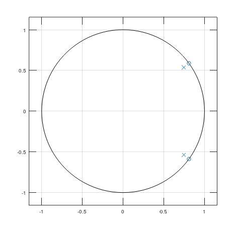
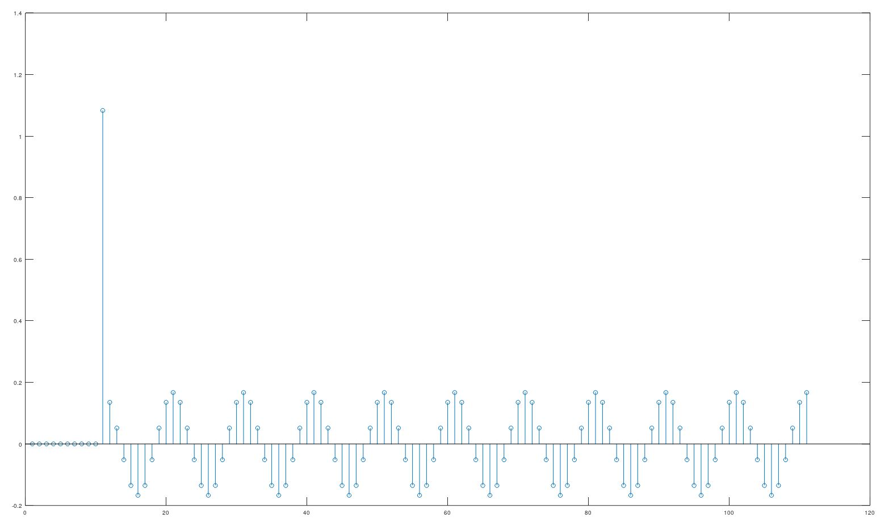
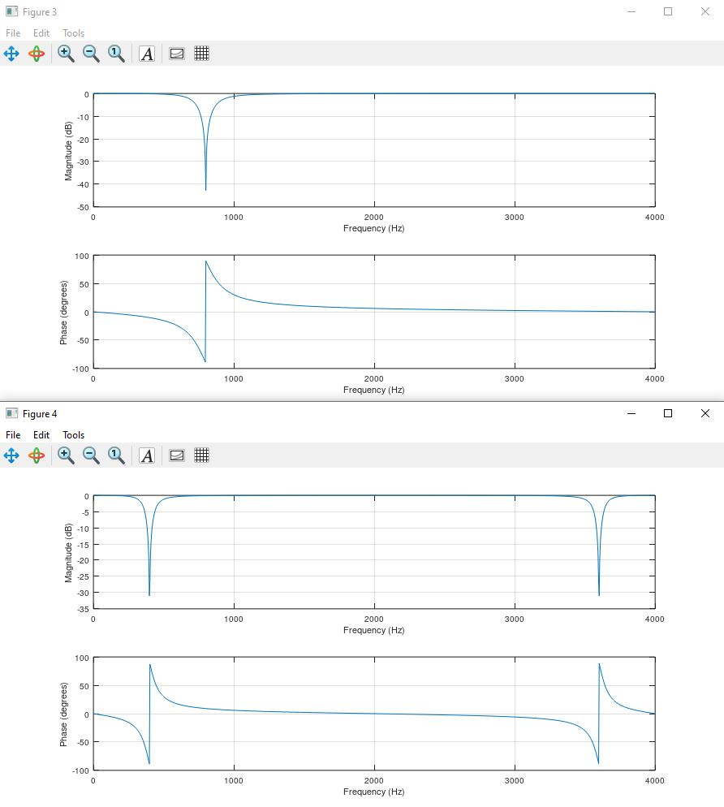
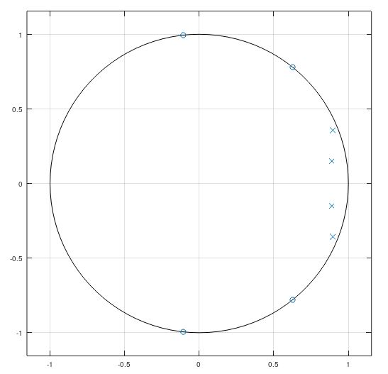
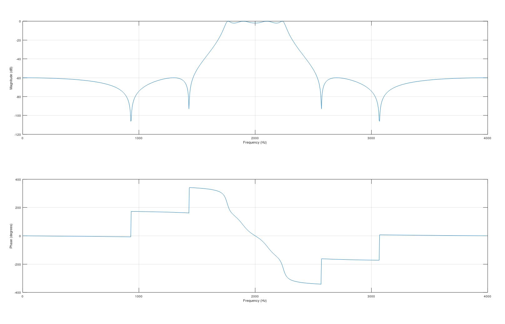

Study 5:
Modification of Systems
|
Name: Gemma Qin
|
ID: 2217960
|
Read these instructions first!
|
Number |
Questions |
Write your answer in this column |
Hints |
|
Q1 |
Generate
filter parameters for an IIR-type bandstop notch filter with the following
properties:
Verify your design from Amplitude Response |

|
freqz, notch.html |
|
Q2 |
Stem-plot
few first values of the impulse response of the system, and verify from the
plot that this is indeed an IIR-system. |
 |
filter |
|
Q3 |
Double
all delays of the previous system and compare the frequency responses of the
original and modified system. |
 |
|
|
Q4 |
You have
given the following 4th order difference equation y[n] =
0.0023018x[n] + -0.0023886x[n-1] + 0.0039849x[n-2] + -0.0023886x[n-3] + 0.0023018x[n-4] + 3.57009y[n-1] + -4.92927y[n-2]
+ 3.11044y[n-3]
+ -0.75606y[n-4] Find out
the pole-zero diagram and the frequency response assuming 8 kHz sampling
rate. What kind of filter this
is, and what is the -3dB corner frequency? |
 |
zplane freqz |
|
Q5 |
Convert
the Q4 filter to a bandpass filter whose center frequency is 2 kHz and
bandwidth is 1 kHz (assuming 8kHz sampling frequency) |
 |
Change
first the direction of real axis, then double the delay elements |
|
Q6 |
Determine
the filter coefficients for a cascaded second-order-section (SOS)
implementation of the filter in Q4 (4th order system). Verify
your design by cascading the sections and calculate combined filter
coefficients. |
|
Pick
zero-pole complex conjugate pairs, and determine the system coefficients for
both systems separately. Make sure that the system gain does not change in
process. Multiplication
of two polynomials can be done with the conv command |